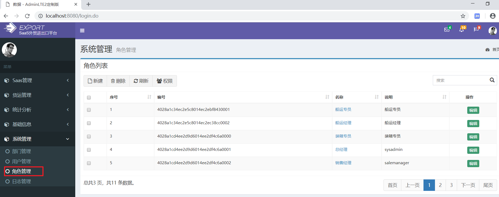
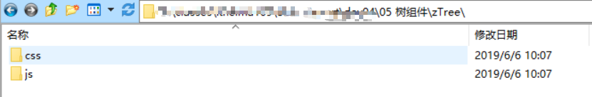
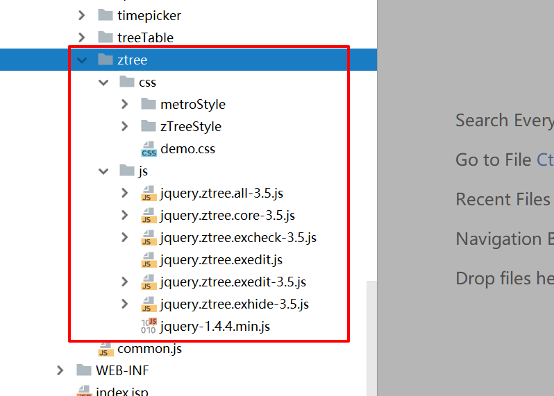
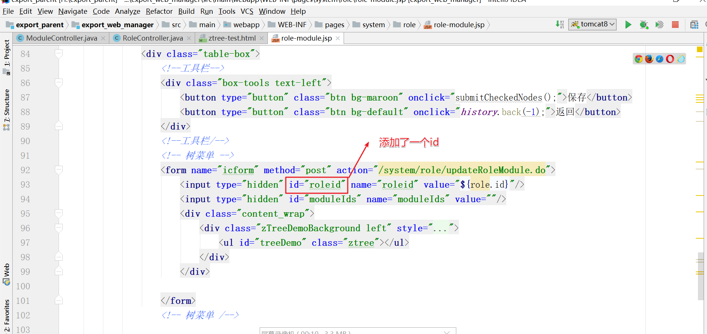

学习目标
1、完成模块管理
2、完成角色管理
3、完成用户分配角色
4、学习前端ztree插件的使用
5、完成角色分配权限
1. 角色管理
需求
实现角色模块增删改查操作：
1）表结构
2）效果预览

步骤
- 编写Role实体类
- 编写RoleDao接口
- 编写RoleDao接口映射
- 编写RoleService接口
- 编写RoleServiceImpl接口实现
- 编写RoleController
- 修改role-list.jsp
实现
编写Role实体类
public class Role { private String id; private String name; private String remark; private Long orderNo; private String companyId; private String companyName;编写RoleDao接口
public interface RoleDao { //根据id查询 Role findById(String id); //查询全部 List<Role> findAll(String companyId); //根据id删除 void delete(String id); //添加 void save(Role role); //更新 void update(Role role); }编写RoleDao接口映射
<?xml version="1.0" encoding="UTF-8"?> <!DOCTYPE mapper PUBLIC "-//mybatis.org//DTD Mapper 3.0//EN" "http://mybatis.org/dtd/mybatis-3-mapper.dtd"> <mapper namespace="cn.itcast.dao.system.RoleDao"> <resultMap id="BaseResultMap" type="cn.itcast.domain.system.Role"> <id column="role_id" property="id"/> <result column="name" property="name"/> <result column="remark" property="remark"/> <result column="order_no" property="orderNo"/> <result column="company_id" property="companyId"/> <result column="company_name" property="companyName"/> </resultMap> <!--查询全部--> <select id="findAll" resultMap="BaseResultMap"> select * from pe_role where company_id=#{companyId} </select> <!--根据id查询--> <select id="findById" parameterType="java.lang.String" resultMap="BaseResultMap"> select * from pe_role where role_id = #{id} </select> <!--删除--> <delete id="delete"> delete from pe_role where role_id = #{id} </delete> <!--保存--> <insert id="save"> insert into pe_role (role_id, name, remark, order_no,company_id, company_name) values (#{id}, #{name}, #{remark}, #{orderNo}, #{companyId}, #{companyName}) </insert> <!--更新--> <update id="update"> update pe_role set name = #{name}, remark = #{remark}, order_no = #{orderNo} where role_id = #{id} </update> </mapper>编写RoleService接口
package cn.itcast.service.system; import cn.itcast.domain.system.Role; import com.github.pagehelper.PageInfo; import java.util.List; //替换键ctrl+R public interface RoleService { //分页查询整个角色 PageInfo<Role> findByPage(Integer pageNum, Integer pageSize, String companyId); //根据企业id查找所有角色 List<Role> findAll(String companyId); //添加角色 void save(Role role); //更新角色 void update(Role role); //根据id查找角色 Role findById(String id); //删除角色 void delete(String id); }编写RoleServiceImpl接口实现
package cn.itcast.service.system.impl; import cn.itcast.dao.system.RoleDao; import cn.itcast.domain.system.Role; import cn.itcast.service.system.RoleService; import com.github.pagehelper.PageHelper; import com.github.pagehelper.PageInfo; import org.springframework.beans.factory.annotation.Autowired; import org.springframework.stereotype.Service; import java.util.List; import java.util.UUID; @Service public class RoleServiceImpl implements RoleService { @Autowired private RoleDao roleDao; //分页查询整个角色 @Override public PageInfo<Role> findByPage(Integer pageNum, Integer pageSize, String companyId) { //1. 设置当前页与页面大小 PageHelper.startPage(pageNum,pageSize); //2 查询所有 List<Role> roleList = roleDao.findAll(companyId); //3. 创建PageInfo对象 PageInfo<Role> pageInfo = new PageInfo<>(roleList); return pageInfo; } //根据企业id查找所有角色 @Override public List<Role> findAll(String companyId) { return roleDao.findAll(companyId); } //添加角色 @Override public void save(Role role) { //设置一个uuid作为主键 role.setId(UUID.randomUUID().toString()); //保存 roleDao.save(role); } //更新角色 @Override public void update(Role role) { roleDao.update(role); } //根据id查找角色 @Override public Role findById(String id) { return roleDao.findById(id); } //删除角色 @Override public void delete(String id) { //3. 如果不存在子角色， 那么可以直接删除，最后返回true roleDao.delete(id); } }编写RoleController
package cn.itcast.web.controller.system; import cn.itcast.domain.system.Dept; import cn.itcast.domain.system.Role; import cn.itcast.service.system.DeptService; import cn.itcast.service.system.RoleService; import cn.itcast.web.controller.BaseController; import com.github.pagehelper.PageInfo; import org.springframework.beans.factory.annotation.Autowired; import org.springframework.stereotype.Controller; import org.springframework.util.StringUtils; import org.springframework.web.bind.annotation.RequestMapping; import org.springframework.web.bind.annotation.RequestParam; import org.springframework.web.bind.annotation.ResponseBody; import javax.servlet.http.HttpServletRequest; import java.util.HashMap; import java.util.List; import java.util.Map; @Controller @RequestMapping("/system/role") public class RoleController extends BaseController { @Autowired private RoleService roleService; @Autowired private DeptService deptService; /* 作用 : 进入到角色分页列表中 url: /system/role/list.do 参数： 当前页， 页面大小 返回值： system/role/role-list */ @RequestMapping("/list") public String list(@RequestParam(defaultValue = "1") Integer pageNum,@RequestParam(defaultValue = "5") Integer pageSize){ //companyId应该是属于登陆的角色所属的企业，由于我们当前还没有做登陆功能，所以我们只能模拟 String companyId =getLoginUserCompanyId() ; PageInfo<Role> pageInfo = roleService.findByPage(pageNum, pageSize, companyId); //存储到request域中 request.setAttribute("pageInfo",pageInfo); return "system/role/role-list"; } /* 作用 : 进入添加角色的页面 url: /system/role/toAdd.do 参数： 无 返回值： system/role/role-add */ @RequestMapping("/toAdd") public String toAdd(HttpServletRequest request){ //companyId应该是属于登陆的角色所属的企业，由于我们当前还没有做登陆功能，所以我们只能模拟 String companyId = getLoginUserCompanyId(); //查询所有部门的信息 List<Dept> deptList = deptService.findAll(companyId); //存储域中 request.setAttribute("deptList",deptList); return "system/role/role-add"; } /* 作用 : 保存角色，修改角色 url: /system/role/edit.do 参数： Role对象 返回值： 角色列表 */ @RequestMapping("/edit") public String edit(Role role){ // String companyId = getLoginUserCompanyId(); String companyName = getLoginUserCompanyName(); role.setCompanyId(companyId); role.setCompanyName(companyName); //判断主键是否为空，如果不为空为修改，如果为空则添加 if(StringUtils.isEmpty(role.getId())){ //添加 roleService.save(role); }else{ //修改 roleService.update(role); } //使用请求重定向到角色列表页面中 return "redirect:/system/role/list.do"; } /* 作用 : 进入角色修改页面 url: /system/role/toUpdate.do?id=e20c2b2d-b3b2-4342-a74d-1e2b73e28551 参数： 角色的id 返回值： system/role/role-update */ @RequestMapping("/toUpdate") public String toUpdate(String id) { //1. 查找所有角色 String companyId = getLoginUserCompanyId(); //3. 查找当前的角色 Role role = roleService.findById(id); //4. 把当前角色存储到请求域中 request.setAttribute("role",role); //5. 请求转发到role-update页面 return "system/role/role-update"; } /* 作用 : 删除角色 url: /system/role/delete.do 参数： 角色的id 返回值： 列表页面 */ @RequestMapping("/delete") public String delete(String id) { roleService.delete(id); return "redirect:/system/role/list.do"; } }修改role-list.jsp
测试
2. 模块管理
需求
实现Module模块增删改查操作：
1）表结构
2）效果预览
步骤
- 编写Module实体类
- 编写ModuleDao接口
- 编写ModuleDao接口映射
- 编写ModuleService接口
- 编写ModuleServiceImpl接口实现
- 编写ModuleController
- 修改module-list.jsp
实现
编写Module实体类
public class Module implements Serializable { private String id; //父模块id private String parentId; //父模块名称,冗余字段 private String parentName; //模块名称 private String name; private Integer layerNum; private Integer isLeaf; private String ico; private String cpermission; private String curl; //0 主菜单/1 左侧菜单/2按钮 private Integer ctype; //1启用0停用 private Integer state; /** * 从属关系 * 0：sass系统内部菜单 * 1：租用企业菜单 */ private Integer belong; private String cwhich; private Integer quoteNum; private String remark; private Integer orderNo; @Override public boolean equals(Object o) { if (this == o) return true; if (!(o instanceof Module)) return false; Module module = (Module) o; return Objects.equals(id, module.id); } @Override public int hashCode() { return Objects.hash(id); } public String getId() { return id; } public void setId(String id) { this.id = id; } public String getParentId() { return parentId; } public void setParentId(String parentId) { this.parentId = parentId; } public String getParentName() { return parentName; } public void setParentName(String parentName) { this.parentName = parentName; } public String getName() { return name; } public void setName(String name) { this.name = name; } public Integer getLayerNum() { return layerNum; } public void setLayerNum(Integer layerNum) { this.layerNum = layerNum; } public Integer getIsLeaf() { return isLeaf; } public void setIsLeaf(Integer isLeaf) { this.isLeaf = isLeaf; } public String getIco() { return ico; } public void setIco(String ico) { this.ico = ico; } public String getCpermission() { return cpermission; } public void setCpermission(String cpermission) { this.cpermission = cpermission; } public String getCurl() { return curl; } public void setCurl(String curl) { this.curl = curl; } public Integer getCtype() { return ctype; } public void setCtype(Integer ctype) { this.ctype = ctype; } public Integer getState() { return state; } public void setState(Integer state) { this.state = state; } public Integer getBelong() { return belong; } public void setBelong(Integer belong) { this.belong = belong; } public String getCwhich() { return cwhich; } public void setCwhich(String cwhich) { this.cwhich = cwhich; } public Integer getQuoteNum() { return quoteNum; } public void setQuoteNum(Integer quoteNum) { this.quoteNum = quoteNum; } public String getRemark() { return remark; } public void setRemark(String remark) { this.remark = remark; } public Integer getOrderNo() { return orderNo; } public void setOrderNo(Integer orderNo) { this.orderNo = orderNo; } }编写ModuleDao接口
public interface ModuleDao { //根据id查询 Module findById(String moduleId); //根据id删除 void delete(String moduleId); //添加 void save(Module module); //更新 void update(Module module); //查询全部 List<Module> findAll(); }编写ModuleDao接口映射
<?xml version="1.0" encoding="UTF-8"?> <!DOCTYPE mapper PUBLIC "-//mybatis.org//DTD Mapper 3.0//EN" "http://mybatis.org/dtd/mybatis-3-mapper.dtd"> <mapper namespace="cn.itcast.dao.system.ModuleDao"> <resultMap id="BaseResultMap" type="cn.itcast.domain.system.Module"> <id column="module_id" property="id" /> <result column="parent_id" property="parentId" /> <result column="parent_name" property="parentName" /> <result column="name" property="name" /> <result column="layer_num" property="layerNum" /> <result column="is_leaf" property="isLeaf" /> <result column="ico" property="ico" /> <result column="cpermission" property="cpermission" /> <result column="curl" property="curl" /> <result column="ctype" property="ctype" /> <result column="state" property="state" /> <result column="belong" property="belong" /> <result column="cwhich" property="cwhich" /> <result column="quote_num" property="quoteNum" /> <result column="remark" property="remark" /> <result column="order_no" property="orderNo" /> </resultMap> <!--查询全部模块列表--> <select id="findAll" resultMap="BaseResultMap"> select * from ss_module </select> <!--根据id查询--> <select id="findById" resultMap="BaseResultMap"> select * from ss_module where module_id = #{id} </select> <!--删除--> <delete id="delete"> delete from ss_module where module_id = #{id} </delete> <!--保存--> <insert id="save"> insert into ss_module (module_id, parent_id, parent_name, name, layer_num, is_leaf, ico, cpermission, curl, ctype, state, belong, cwhich, quote_num, remark, order_no) values (#{id}, #{parentId}, #{parentName}, #{name}, #{layerNum}, #{isLeaf}, #{ico}, #{cpermission}, #{curl}, #{ctype}, #{state}, #{belong}, #{cwhich}, #{quoteNum}, #{remark}, #{orderNo}) </insert> <!--更新--> <update id="update"> update ss_module set parent_id = #{parentId}, parent_name = #{parentName}, name = #{name}, layer_num = #{layerNum}, is_leaf = #{isLeaf}, ico = #{ico}, cpermission = #{cpermission}, curl = #{curl}, ctype = #{ctype}, state = #{state}, belong = #{belong}, cwhich = #{cwhich}, quote_num = #{quoteNum}, remark = #{remark}, order_no = #{orderNo} where module_id = #{id} </update> </mapper>编写ModuleService接口
package cn.itcast.service.system; import cn.itcast.domain.system.Module; import com.github.pagehelper.PageInfo; import java.util.List; //替换键ctrl+R public interface ModuleService { //分页查询整个模块 PageInfo<Module> findByPage(Integer pageNum, Integer pageSize); //根据企业id查找所有模块 List<Module> findAll(); //添加模块 void save(Module module); //更新模块 void update(Module module); //根据id查找模块 Module findById(String id); //删除模块 void delete(String id); }编写ModuleServiceImpl接口实现
package cn.itcast.service.system.impl; import cn.itcast.dao.system.ModuleDao; import cn.itcast.domain.system.Module; import cn.itcast.service.system.ModuleService; import com.github.pagehelper.PageHelper; import com.github.pagehelper.PageInfo; import org.springframework.beans.factory.annotation.Autowired; import org.springframework.stereotype.Service; import java.util.List; import java.util.UUID; @Service public class ModuleServiceImpl implements ModuleService { @Autowired private ModuleDao moduleDao; //分页查询整个模块 @Override public PageInfo<Module> findByPage(Integer pageNum, Integer pageSize) { //1. 设置当前页与页面大小 PageHelper.startPage(pageNum,pageSize); //2 查询所有 List<Module> moduleList = moduleDao.findAll(); //3. 创建PageInfo对象 PageInfo<Module> pageInfo = new PageInfo<>(moduleList); return pageInfo; } //根据企业id查找所有模块 @Override public List<Module> findAll() { return moduleDao.findAll(); } //添加模块 @Override public void save(Module module) { //设置一个uuid作为主键 module.setId(UUID.randomUUID().toString()); //保存 moduleDao.save(module); } //更新模块 @Override public void update(Module module) { moduleDao.update(module); } //根据id查找模块 @Override public Module findById(String id) { return moduleDao.findById(id); } //删除模块 @Override public void delete(String id) { //3. 如果不存在子模块， 那么可以直接删除，最后返回true moduleDao.delete(id); } }编写ModuleController
package cn.itcast.web.controller.system; import cn.itcast.domain.system.Dept; import cn.itcast.domain.system.Module; import cn.itcast.service.system.DeptService; import cn.itcast.service.system.ModuleService; import cn.itcast.web.controller.BaseController; import com.github.pagehelper.PageInfo; import org.springframework.beans.factory.annotation.Autowired; import org.springframework.stereotype.Controller; import org.springframework.util.StringUtils; import org.springframework.web.bind.annotation.RequestMapping; import org.springframework.web.bind.annotation.RequestParam; import javax.servlet.http.HttpServletRequest; import java.util.List; @Controller @RequestMapping("/system/module") public class ModuleController extends BaseController { @Autowired private ModuleService moduleService; @Autowired private DeptService deptService; /* 作用 : 进入到模块分页列表中 url: /system/module/list.do 参数： 当前页， 页面大小 返回值： system/module/module-list */ @RequestMapping("/list") public String list(@RequestParam(defaultValue = "1") Integer pageNum,@RequestParam(defaultValue = "5") Integer pageSize){ PageInfo<Module> pageInfo = moduleService.findByPage(pageNum, pageSize); //存储到request域中 request.setAttribute("pageInfo",pageInfo); return "system/module/module-list"; } /* 作用 : 进入添加模块的页面 url: /system/module/toAdd.do 参数： 无 返回值： system/module/module-add */ @RequestMapping("/toAdd") public String toAdd(HttpServletRequest request){ //companyId应该是属于登陆的模块所属的企业，由于我们当前还没有做登陆功能，所以我们只能模拟 String companyId = getLoginUserCompanyId(); //查询所有部门的信息 List<Module> moduleList = moduleService.findAll(); //存储域中 request.setAttribute("menus",moduleList); return "system/module/module-add"; } /* 作用 : 保存模块，修改模块 url: /system/module/edit.do 参数： Module对象 返回值： 模块列表 */ @RequestMapping("/edit") public String edit(Module module){ //判断主键是否为空，如果不为空为修改，如果为空则添加 if(StringUtils.isEmpty(module.getId())){ //添加 moduleService.save(module); }else{ //修改 moduleService.update(module); } //使用请求重定向到模块列表页面中 return "redirect:/system/module/list.do"; } /* 作用 : 进入模块修改页面 url: /system/module/toUpdate.do?id=e20c2b2d-b3b2-4342-a74d-1e2b73e28551 参数： 模块的id 返回值： system/module/module-update */ @RequestMapping("/toUpdate") public String toUpdate(String id) { //1. 查找所有模块 String companyId = getLoginUserCompanyId(); //3. 查找当前的模块 Module module = moduleService.findById(id); //4. 把当前模块存储到请求域中 request.setAttribute("module",module); List<Module> moduleList = moduleService.findAll(); //存储域中 request.setAttribute("menus",moduleList); //5. 请求转发到module-update页面 return "system/module/module-update"; } /* 作用 : 删除模块 url: /system/module/delete.do 参数： 模块的id 返回值： 列表页面 */ @RequestMapping("/delete") public String delete(String id) { moduleService.delete(id); return "redirect:/system/module/list.do"; } }修改module-list.jsp
3. 角色分配权限（一）需求分析
需求
给角色分配权限，其实就是：
- 给角色添加权限，其实就是往pe_role_module表插入数据
- 删除角色的某个角色的权限，其实就是删除pe_role_module表中的关系数据
如图：
数据库实现：
-- 角色分配权限的原理
-- 1. 先删除该角色的权限
DELETE FROM pe_role_module WHERE role_id = #{roleId}
-- 2. 重新给该角色添加权限
INSERT INTO pe_role_module VALUES(#{roleId},#{moduleId})
INSERT INTO pe_role_module VALUES(#{roleId},#{moduleId})
INSERT INTO pe_role_module VALUES(#{roleId},#{moduleId})
INSERT INTO pe_role_module VALUES(#{roleId},#{moduleId})案例效果图
如何实现?
由于我们的权限是有父子关系，如何给角色分配权限呢？页面如何涉及？
当用户具有模块管理权限时候，一定要先具有父菜单Saas的访问权限。
4. 角色分配权限（二）树形组件Ztreer介绍
效果
ztree介绍
zTree 是一个依靠 jQuery 实现的多功能 “树插件”。优异的性能、灵活的配置、多种功能的组合是 zTree 最大优点。专门适合项目开发，尤其是 树状菜单、树状数据的Web显示、权限管理等等。
zTree 是开源免费的软件（MIT 许可证）。在开源的作用下，zTree 越来越完善，目前已经拥有了不少粉丝，并且今后还会推出更多的 zTree 扩展功能库，让 zTree 更加强大。ztree优势如下：
● zTree v3.0 将核心代码按照功能进行了分割，不需要的代码可以不用加载
● 采用了[延迟加载](https://baike.baidu.com/item/%E5%BB%B6%E8%BF%9F%E5%8A%A0%E8%BD%BD)技术，上万节点轻松加载，即使在 IE6 下也能基本做到秒杀
● 兼容 IE、FireFox、Chrome、Opera、Safari 等浏览器
● 支持 JSON 数据
● 支持静态和 Ajax 异步加载节点数据
● 支持任意更换皮肤 / 自定义图标（依靠css）
● 支持极其灵活的 checkbox 或 radio 选择功能
● 提供多种事件响应回调
● 灵活的编辑（增/删/改/查）功能，可随意拖拽节点，还可以多节点拖拽哟
● 在一个页面内可同时生成多个 Tree 实例
● 简单的参数配置实现 灵活多变的功能5. 角色分配权限（三）ztree入门程序
引入ztree(==项目已经有==)
- 把如下资源拷贝到webapp/plugins目录下：

- 如图：

步骤
第一步：拷贝如下引入的css/js文件到项目的ztree-test.html页面
第二步：页面定义显示树的区域
第三步：拷贝js到页面
实现
第一步：新建一个ztree-test.html文件，在ztree-test.html页面引入相关的css与js文件。
图1：
图2：
第二步：页面定义显示树的区域
图1：参考如下
第三步：拷贝ztree的js代码到页面
图1：参考如下
图2：拷贝到页面
<!DOCTYPE html>
<html lang="en">
<head>
<meta charset="UTF-8">
<title>Title</title>
<!--第一步： 引入ztree的js与css文件-->
<link rel="stylesheet" href="/plugins/ztree/css/demo.css" type="text/css">
<link rel="stylesheet" href="/plugins/ztree/css/zTreeStyle/zTreeStyle.css" type="text/css">
<script type="text/javascript" src="/plugins/ztree/js/jquery-1.4.4.min.js"></script>
<script type="text/javascript" src="/plugins/ztree/js/jquery.ztree.core-3.5.js"></script>
<script type="text/javascript" src="/plugins/ztree/js/jquery.ztree.excheck-3.5.js"></script>
</head>
<body>
<!--第二步： 使用ul标签给树预留一个位置-->
<ul id="treeDemo" class="ztree"></ul>
</body>
<script>
// 第三步： 编写js展示树
// 3.1 给ztree定义一个全局参数
var setting = {
check: {
enable: true //是否要使用复选框
},
data: {
simpleData: {
enable: true //是否要展示树形结构
}
}
};
// 3.2 准备树的数据
var zNodes =[
{ id:1, pId:0, name:"saas管理", open:true},
{ id:11, pId:1, name:"企业管理", open:true},
{ id:111, pId:1, name:"模块管理", open:true}
];
// 3.3 把数的数组展示到ul标签中
$.fn.zTree.init($("#treeDemo"), setting, zNodes);
</script>
</html>6. 角色分配权限（四）进入角色权限页面
预览
- 图1：在role-list.jsp 点击权限

- 图2：进入role-module.jsp页面，最后完整效果如下。目前只要实现进入页面，页面发送异步请求初始化树在下一步完成。
步骤
- 检查role-list.jsp点击权限时候，提交地址
- RoleController添加方法，进入role-module.jsp角色权限页面
实现
检查role-list.jsp点击权限时候，提交地址
RoleController添加方法，进入role-module.jsp角色权限页面
package cn.itcast.web.controller.system;
import cn.itcast.domain.system.Dept;
import cn.itcast.domain.system.Role;
import cn.itcast.service.system.DeptService;
import cn.itcast.service.system.RoleService;
import cn.itcast.web.controller.BaseController;
import com.github.pagehelper.PageInfo;
import org.springframework.beans.factory.annotation.Autowired;
import org.springframework.stereotype.Controller;
import org.springframework.util.StringUtils;
import org.springframework.web.bind.annotation.RequestMapping;
import org.springframework.web.bind.annotation.RequestParam;
import org.springframework.web.bind.annotation.ResponseBody;
import java.util.HashMap;
import java.util.List;
import java.util.Map;
@Controller
@RequestMapping("/system/role")
public class RoleController extends BaseController {
@Autowired
private DeptService deptService;
@Autowired
private RoleService roleService;
/*
作用 : 进入角色权限页面
url: /system/role/roleModule.do?roleid=4028a1c34ec2e5c8014ec2ebf8430001
参数： roleidm 角色的id
返回值： 角色权限页面
*/
@RequestMapping("/roleModule")
public String roleModule(String roleid) {
//1. 根据id查询角色
Role role = roleService.findById(roleid);
//2. 存储到请求域中
request.setAttribute("role",role);
return "system/role/role-module";
}
}
7. 角色分配权限（五）页面异步请求初始化树（重点）
步骤
- 检查role-module.jsp页面，发送ajax请求的提交地址
- RoleController添加方法，处理ajax请求，返回ztree需要的json格式数据
- ModuleService添加查询方法： 根据角色id，查询角色已经有的权限
- ModuleDao接口添加方法： 根据角色id，查询角色已经有的权限
- 测试
实现
检查role-module.jsp页面，发送ajax请求的提交地址

<SCRIPT type="text/javascript">
$(function(){
//该异步请求主要请求树的数据
$.ajax({
url:"/system/role/getTreeNodes.do",
data:{"roleid":$("#roleid").val()},
dataType:"json",
success:function(treeData){
//请求成功之后，我们应该展示树出来
//1. 全局参数
var setting = {
check: {
enable: true //是否要使用复选框
},
data: {
simpleData: {
enable: true //是否要展示树形结构
}
}
};
//2. 准备树的数据
var zNodes =treeData;
// 3 把数的数组展示到ul标签中
$.fn.zTree.init($("#treeDemo"), setting, zNodes);
}
});
})
</SCRIPT>RoleController添加方法，处理ajax请求，返回ztree需要的json格式数据
package cn.itcast.web.controller.system; import cn.itcast.domain.system.Module; import cn.itcast.domain.system.Role; import cn.itcast.service.system.ModuleService; import cn.itcast.service.system.RoleService; import cn.itcast.web.controller.BaseController; import com.github.pagehelper.PageInfo; import org.springframework.beans.factory.annotation.Autowired; import org.springframework.stereotype.Controller; import org.springframework.util.StringUtils; import org.springframework.web.bind.annotation.RequestMapping; import org.springframework.web.bind.annotation.RequestParam; import org.springframework.web.bind.annotation.ResponseBody; import java.util.ArrayList; import java.util.HashMap; import java.util.List; import java.util.Map; @Controller @RequestMapping("/system/role") public class RoleController extends BaseController { @Autowired private RoleService roleService; @Autowired private ModuleService moduleService; /* [ { id:1, pId:0, name:"saas管理", open:true}, { id:11, pId:1, name:"企业管理", open:true}, { id:111, pId:1, name:"模块管理", open:true} ] 作用 : 得到树的节点数据 url: /system/role/getTreeNodes.do?roleid=4028a1c34ec2e5c8014ec2ebf8430001 参数： roleidm 角色的id 返回值： json对象，json对象就是权限 */ @RequestMapping("/getTreeNodes") @ResponseBody public List<Map<String,Object>> getTreeNodes(String roleid) { //1. 定义一个集合存储结果数据 List<Map<String,Object>> resultList = new ArrayList<>(); //2. 得到所有的权限 List<Module> moduleList = moduleService.findAll(); //3. 查询当前角色拥有权限 List<Module> roleModuleList = moduleService.findRoleModuleByRoleId(roleid); //3. 遍历所有的权限，每一个权限对应一个Map对象 for (Module module : moduleList) { Map<String,Object> map = new HashMap<>(); map.put("id",module.getId()); map.put("pId",module.getParentId()); map.put("name",module.getName()); map.put("open",true); //如果当前遍历的权限是存在于roleModuleList里面，那么就应该默认选中 if(roleModuleList.contains(module)) { //contains方法的底层是依赖equals方法判断的。 map.put("checked", true); } //把map添加到List集合中 resultList.add(map); } //4. 返回list return resultList; } }
- ModuleService添加查询方法： 根据角色id，查询角色已经有的权限
package cn.itcast.service.system;
import cn.itcast.domain.system.Module;
import com.github.pagehelper.PageInfo;
import java.util.List;
public interface ModuleService {
//根据角色的id查找 权限
List<Module> findRoleModuleByRoleId(String roleid);
}
- ModuleServiceImpl添加查询方法： 根据角色id，查询角色已经有的权限
package cn.itcast.service.system.impl;
import cn.itcast.dao.system.ModuleDao;
import cn.itcast.domain.system.Module;
import cn.itcast.service.system.ModuleService;
import com.github.pagehelper.PageHelper;
import com.github.pagehelper.PageInfo;
import org.springframework.beans.factory.annotation.Autowired;
import org.springframework.stereotype.Service;
import java.util.List;
import java.util.UUID;
@Service
public class ModuleServiceImpl implements ModuleService {
@Autowired
private ModuleDao moduleDao;
//根据角色的id查找 权限
@Override
public List<Module> findRoleModuleByRoleId(String roleid) {
return moduleDao.findRoleModuleByRoleId(roleid);
}
}
- ModuleDao接口添加方法： 根据角色id，查询角色已经有的权限
package cn.itcast.dao.system;
import cn.itcast.domain.system.Module;
import java.util.List;
public interface ModuleDao {
//根据角色id查找权限
List<Module> findRoleModuleByRoleId(String roleid);
}图2：ModuleDao.xml添加映射配置
<?xml version="1.0" encoding="UTF-8"?>
<!DOCTYPE mapper PUBLIC "-//mybatis.org//DTD Mapper 3.0//EN" "http://mybatis.org/dtd/mybatis-3-mapper.dtd">
<mapper namespace="cn.itcast.dao.system.ModuleDao">
<!-- //根据角色id查找权限
List<Module> findRoleModuleByRoleId(String roleid);-->
<select id="findRoleModuleByRoleId" resultMap="BaseResultMap">
SELECT m.* FROM pe_role_module rm INNER JOIN ss_module m ON rm.`module_id`=m.`module_id` WHERE rm.`role_id`=#{roleId}
</select>
</mapper>8. 角色分配权限（六）保存角色权限 A 页面处理
需求
点击保存，往pe_role_module表插入或删除数据。（目前只处理页面部分）
- 图1：role-module.jsp
- 图2：点击保存后，需要往角色权限中间表添加记录。
步骤
检查role-module.jsp页面保存提交地址
页面js处理： 获取选中节点的模块的id，提交到后台
实现
检查role-module.jsp页面保存提交地址
<form name="icform" method="post" action="/system/role/updateRoleModule.do"> <input type="hidden" id="roleId" name="roleId" value="${role.id}"/> <input type="hidden" id="moduleIds" name="moduleIds" value=""/> <div class="content_wrap"> <div class="zTreeDemoBackground left" style="overflow: visible"> <ul id="treeDemo" class="ztree"></ul> </div> </div> </form>role_module.jsp页面js处理： 获取选中节点的模块的id，提交到后台
<script> /* 该方法的作用： 1. 获取到选中的复选框id，把选中的module的id构建成一个字符串:moduleIds. moduleIds这个变量要保存所有权限的id。1,2,3,4,5 2. 把moduleIds设置到隐藏域中，把icform提交 */ function submitCheckedNodes(){ //1. 获取到选中的模块的id var treeObj = $.fn.zTree.getZTreeObj("treeDemo"); var nodes = treeObj.getCheckedNodes(true); //2. 定义一个moduleIds的变量保存所有选中模块的id var moduleIds = ""; //遍历所有选中的模块 for(var index = 0; index<nodes.length ; index++){ var node = nodes[index]; if(index==nodes.length-1){ //最后节点 moduleIds+=node.id; }else{ moduleIds+=node.id+","; } } //3. 把moduleIds设置到隐藏域中 $("#moduleIds").val(moduleIds); //4. 表单提交 $("#icform").submit(); } </SCRIPT>
9. 角色分配权限（七）保存角色权限 B 后台处理
步骤
- RoleController添加方法，实现保存角色权限
- RoleService添加方法
- RoleDao接口、映射添加方法
实现
RoleController添加方法，实现保存角色权限
package cn.itcast.web.controller.system; import cn.itcast.domain.system.Dept; import cn.itcast.domain.system.Module; import cn.itcast.domain.system.Role; import cn.itcast.service.system.DeptService; import cn.itcast.service.system.ModuleService; import cn.itcast.service.system.RoleService; import cn.itcast.web.controller.BaseController; import com.github.pagehelper.PageInfo; import org.springframework.beans.factory.annotation.Autowired; import org.springframework.stereotype.Controller; import org.springframework.util.StringUtils; import org.springframework.web.bind.annotation.RequestMapping; import org.springframework.web.bind.annotation.RequestParam; import org.springframework.web.bind.annotation.ResponseBody; import java.util.ArrayList; import java.util.HashMap; import java.util.List; import java.util.Map; @Controller @RequestMapping("/system/role") public class RoleController extends BaseController { @Autowired private DeptService deptService; @Autowired private RoleService roleService; @Autowired private ModuleService moduleService; /* 作用 : 更新角色的权限 url: /system/role/updateRoleModule.do 参数： roleid（角色id）, moduleIds(权限的id的字符串) 格式：1,2,3,4,5 注意： 传递的参数如果是1,2,4,5这种格式的字符串接收的形式有两种; 1. 直接使用字符串接收，得到的就是一个字符串 1,2,3,4,5 2. 使用数组的接收，得到就是一个数组对象，自动帮你切割好。 返回值： 角色列表 */ @RequestMapping("/updateRoleModule") public String updateRoleModule(String roleid,String[] moduleIds) { roleService.updateRoleModule(roleid,moduleIds); return "redirect:/system/role/list.do"; } }RoleService添加方法
接口
package cn.itcast.service.system; import cn.itcast.domain.system.Role; import com.github.pagehelper.PageInfo; import java.util.List; public interface RoleService { //更新角色的权限 void updateRoleModule(String roleid, String[] moduleIds); }实现
package cn.itcast.service.system.impl; import cn.itcast.dao.system.RoleDao; import cn.itcast.domain.system.Role; import cn.itcast.service.system.RoleService; import com.github.pagehelper.PageHelper; import com.github.pagehelper.PageInfo; import org.springframework.beans.factory.annotation.Autowired; import org.springframework.stereotype.Service; import java.util.List; import java.util.UUID; @Service public class RoleServiceImpl implements RoleService { @Autowired private RoleDao roleDao; //更新角色的权限 @Override public void updateRoleModule(String roleid, String[] moduleIds) { //1. 根据角色的id删除角色权限 roleDao.deleteRoleModuleByRoleId(roleid); //2. 重新给角色添加权限 roleDao.addRoleModules(roleid,moduleIds); } }RoleDao接口、映射添加方法
接口
package cn.itcast.dao.system; import cn.itcast.domain.system.Role; import java.util.List; public interface RoleDao { // 先删除当前角色权限 void deleteRoleModuleByRoleId(String roleid); //2. 给当前角色添加权限 , 注意： 如果dao的方法有两个参数就一定要使用@Param指定参数的名字 void addRoleModules(@Param("roleId") String roleid,@Param("moduleIds") String[] moduleIds); }映射
<!-- //1. 根据角色的id删除角色权限 void deleteRoleModuleByRoleId(String roleid);--> <delete id="deleteRoleModuleByRoleId"> DELETE FROM pe_role_module WHERE role_id = #{roleId} </delete> <!-- //2. 重新给角色添加权限 void addRoleModules(@Param("roleId") String roleid,@Param("moduleIds") String[] moduleIds) collection: 代表要遍历数组或者集合 item:遍历出来的每一个元素 separator：分隔符 ;--> <insert id="addRoleModules"> INSERT INTO pe_role_module VALUES <foreach collection="moduleIds" item="moduleId" separator=","> (#{roleId},#{moduleId}) </foreach> </insert>
10. 角色分配权限（八）保存角色权限 C 完整测试
测试结果如下：
图1：点击保存
图2：点击保存后来到列表
图3：在进入角色权限页面，查看角色的权限
11. 用户分配角色（一）需求分析
需求
图1: 访问用户管理列表
图2：user-role.jsp 页面
流程
给用户分配角色，整体分为2个步骤：
- 进入用户角色列表页面： user-list.jsp—–> user-role.jsp
- 在user-role.jsp点击保存，给用户添加角色
12. 用户分配角色（二）进入用户分配角色页面
步骤
- 查看user-list.jsp页面，点击角色按钮提交地址
- UserController添加方法
- RoleService接口/实现添加方法
- RoleDao接口添加方法以及接口映射
实现
查看user-list.jsp页面，点击角色按钮提交地址
<%@ taglib prefix="c" uri="http://java.sun.com/jsp/jstl/core" %> <%@ page contentType="text/html;charset=UTF-8" language="java" %> <%@ taglib uri="http://java.sun.com/jsp/jstl/fmt" prefix="fmt" %> <%@ taglib uri="http://java.sun.com/jsp/jstl/functions" prefix="fn" %> <%@ include file="../../base.jsp" %> <!DOCTYPE html> <html> <head> <!-- 页面meta --> <meta charset="utf-8"> <meta http-equiv="X-UA-Compatible" content="IE=edge"> <title>数据 - AdminLTE2定制版</title> <meta name="description" content="AdminLTE2定制版"> <meta name="keywords" content="AdminLTE2定制版"> <!-- Tell the browser to be responsive to screen width --> <meta content="width=device-width,initial-scale=1,maximum-scale=1,user-scalable=no" name="viewport"> </head> <script> function formSubmit() { document.icform.action="/system/user/changeRole.do"; document.icform.submit(); } </script> <body> <div id="frameContent" class="content-wrapper" style="margin-left:0px;"> <section class="content-header"> <h1> 用户管理 <small>用户管理</small> </h1> <ol class="breadcrumb"> <li><a href="all-admin-index.html"><i class="fa fa-dashboard"></i> 首页</a></li> </ol> </section> <!-- 内容头部 /--> <!-- 正文区域 --> <section class="content"> <!-- .box-body --> <div class="box box-primary"> <div class="box-header with-border"> <h3 class="box-title">用户 [${user.userName}] 角色列表</h3> </div> <div class="box-body"> <form name="icform" method="post" > <input type="hidden" name="userid" value="${user.id}"/> <input type="hidden" name="oldRoleIds" value="${userRoleStr}"/> <div class="textbox" id="centerTextbox"> <div style="text-align:left"> <c:set var="oldRoleIds" value=""/> <c:forEach items="${roleList}" var="role" varStatus="vs"> <span style="padding:3px;margin-right:30px;width: 160px;display: inline-block"> <input type="checkbox" name="roleIds" value="${role.id}" <c:forEach items="${userRoleList}" var="userRole"> <c:if test="${userRole.id==role.id}"> checked </c:if> </c:forEach> /> ${role.name} </span> </c:forEach> </div> </div> </form> </div> </div> <div class="box-tools text-center"> <button type="button" class="btn bg-maroon" onclick="formSubmit()">保存</button> <button type="button" class="btn bg-default" onclick="history.back(-1);">返回</button> </div> </section> </div> </body> </html>
UserController添加方法
package cn.itcast.web.controller.system; import cn.itcast.domain.system.Dept; import cn.itcast.domain.system.Role; import cn.itcast.domain.system.User; import cn.itcast.service.system.DeptService; import cn.itcast.service.system.RoleService; import cn.itcast.service.system.UserService; import cn.itcast.web.controller.BaseController; import com.github.pagehelper.PageInfo; import org.springframework.beans.factory.annotation.Autowired; import org.springframework.stereotype.Controller; import org.springframework.util.StringUtils; import org.springframework.web.bind.annotation.RequestMapping; import org.springframework.web.bind.annotation.RequestParam; import org.springframework.web.bind.annotation.ResponseBody; import java.util.HashMap; import java.util.List; import java.util.Map; @Controller @RequestMapping("/system/user") public class UserController extends BaseController { @Autowired private DeptService deptService; @Autowired private UserService userService; @Autowired private RoleService roleService; /* 作用 : 进入用户分配角色页面 url: /system/user/roleList.do?id=002108e2-9a10-4510-9683-8d8fd1d374ef 参数： 用户的id 返回值： system/user/user-role */ @RequestMapping("/roleList") public String roleList(String id) { //1. 根据id查找用户 User user = userService.findById(id); request.setAttribute("user",user); //2. 查找到所有的角色 List<Role> roleList = roleService.findAll(getLoginUserCompanyId()); request.setAttribute("roleList",roleList); //3. 查找到当前用户已经具备的角色 List<Role> userRoleList = roleService.findUserRoleByUserId(id); request.setAttribute("userRoleList",userRoleList); //4. 请求转发到user-update页面 return "system/user/user-role"; } }RoleService接口/实现添加方法
RoleService接口（已经完成）
package cn.itcast.service.system; import cn.itcast.domain.system.Role; import com.github.pagehelper.PageInfo; import java.util.List; public interface RoleService { //根据用户的id查找用户的角色 List<Role> findUserRoleByUserId(String id); }
实现
package cn.itcast.service.system.impl;
import cn.itcast.dao.system.RoleDao;
import cn.itcast.domain.system.Role;
import cn.itcast.service.system.RoleService;
import com.github.pagehelper.PageHelper;
import com.github.pagehelper.PageInfo;
import org.springframework.beans.factory.annotation.Autowired;
import org.springframework.stereotype.Service;
import java.util.List;
import java.util.UUID;
@Service
public class RoleServiceImpl implements RoleService {
@Autowired
private RoleDao roleDao;
//根据用户的id查找用户的角色
@Override
public List<Role> findUserRoleByUserId(String id) {
return roleDao.findUserRoleByUserId(id);
}
}
RoleDao接口添加方法以及接口映射
package cn.itcast.dao.system; import cn.itcast.domain.system.Role; import org.apache.ibatis.annotations.Param; import java.util.List; public interface RoleDao { //根据用户的id查找用户的角色 List<Role> findUserRoleByUserId(String id); }
<?xml version="1.0" encoding="UTF-8"?>
<!DOCTYPE mapper PUBLIC "-//mybatis.org//DTD Mapper 3.0//EN" "http://mybatis.org/dtd/mybatis-3-mapper.dtd">
<mapper namespace="cn.itcast.dao.system.RoleDao">
<!--
//根据用户的id查找用户的角色
List<Role> findUserRoleByUserId(String id);-->
<select id="findUserRoleByUserId" resultMap="BaseResultMap">
SELECT r.* FROM pe_role_user ru INNER JOIN pe_role r ON ru.`role_id` = r.`role_id` WHERE ru.`user_id`=#{userId}
</select>
</mapper>13. 用户分配角色（三）保存用户角色
目标
保存用户的角色，往用户角色中间表插入数据
效果预览
图1：
图2：
步骤
- 检查user-role.jsp页面保存提交地址
- UserController添加方法，实现保存用户角色
- UserService添加方法，实现保存用户角色
- UserDao添加方法，实现保存用户角色
实现
检查user-role.jsp页面保存提交地址
UserController添加方法，实现保存用户角色
package cn.itcast.web.controller.system; import cn.itcast.domain.system.Dept; import cn.itcast.domain.system.Role; import cn.itcast.domain.system.User; import cn.itcast.service.system.DeptService; import cn.itcast.service.system.RoleService; import cn.itcast.service.system.UserService; import cn.itcast.web.controller.BaseController; import com.github.pagehelper.PageInfo; import org.springframework.beans.factory.annotation.Autowired; import org.springframework.stereotype.Controller; import org.springframework.util.StringUtils; import org.springframework.web.bind.annotation.RequestMapping; import org.springframework.web.bind.annotation.RequestParam; import org.springframework.web.bind.annotation.ResponseBody; import java.util.HashMap; import java.util.List; import java.util.Map; @Controller @RequestMapping("/system/user") public class UserController extends BaseController { @Autowired private DeptService deptService; @Autowired private UserService userService; @Autowired private RoleService roleService; /* 作用 : 更新用户的角色 url: /system/user/changeRole.do 参数： userid 用户id ，roleIds 角色id 返回值：用户列表 */ @RequestMapping("/changeRole") public String changeRole(String userid,String[] roleIds) { userService.changeUserRole(userid,roleIds); return "redirect:/system/user/list.do"; } }
UserService添加方法，实现保存用户角色
- 接口
package cn.itcast.service.system; import cn.itcast.domain.system.User; import com.github.pagehelper.PageInfo; import java.util.List; public interface UserService { //修改用户的角色 void changeUserRole(String userid, String[] roleIds); }
实现
!
package cn.itcast.service.system.impl; import cn.itcast.dao.system.UserDao; import cn.itcast.domain.system.User; import cn.itcast.service.system.UserService; import com.github.pagehelper.PageHelper; import com.github.pagehelper.PageInfo; import org.springframework.beans.factory.annotation.Autowired; import org.springframework.stereotype.Service; import java.util.List; import java.util.UUID; @Service public class UserServiceImpl implements UserService { @Autowired private UserDao userDao; //修改用户的角色 @Override public void changeUserRole(String userid, String[] roleIds) { //1. 删除该用户的角色 userDao.deleteUserRoleByUserId(userid); //2. 重新给该用户添加角色 userDao.addUserRoles(userid,roleIds); } }
UserDao添加方法，实现保存用户角色
- 接口
package cn.itcast.dao.system; import cn.itcast.domain.system.User; import org.apache.ibatis.annotations.Param; import java.util.List; public interface UserDao { //删除该用户的角色 void deleteUserRoleByUserId(String userid); //重新给该用户添加角色 void addUserRoles(@Param("userId") String userid,@Param("roleIds") String[] roleIds); }
映射
UserDao.xml
<?xml version="1.0" encoding="UTF-8" ?> <!DOCTYPE mapper PUBLIC "-//mybatis.org//DTD Mapper 3.0//EN" "http://mybatis.org/dtd/mybatis-3-mapper.dtd" > <!-- //删除该用户的角色 void deleteUserRoleByUserId(String userid);--> <delete id="deleteUserRoleByUserId"> delete from pe_role_user where user_id=#{userId} </delete> <!--//重新给该用户添加角色 void addUserRoles(@Param("userId") String userid,@Param("roleIds") String[] roleIds);--> <insert id="addUserRoles"> insert into pe_role_user values <foreach collection="roleIds" item="roleId" separator=","> (#{userId},#{roleId}) </foreach> </insert> </mapper>